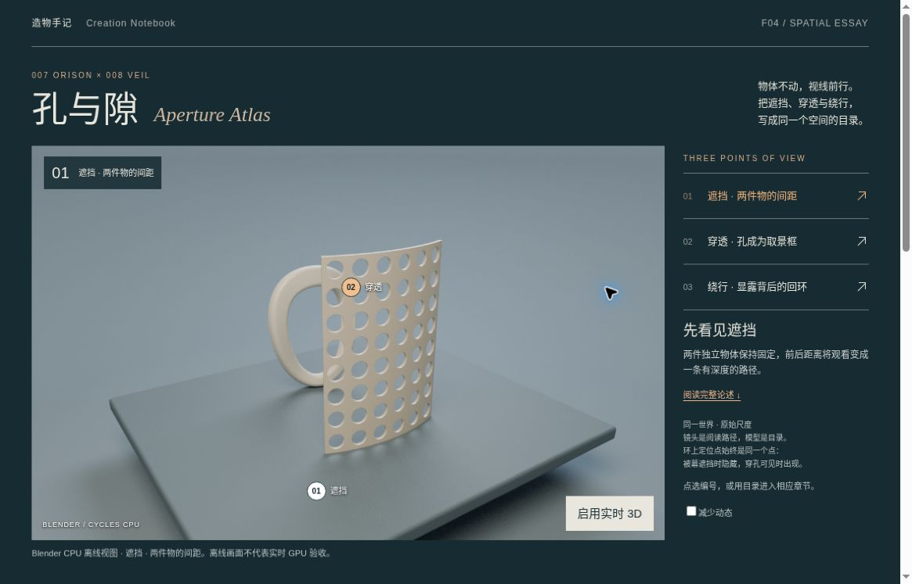
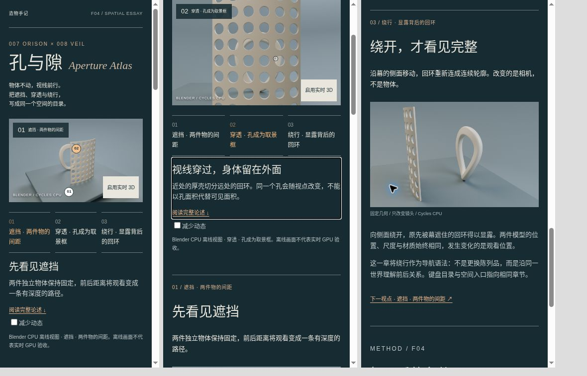

2026-11-02。验证分开记录：原模型身份、融合场景几何、数值相机与射线、原生网页交互。没有任何一项CPU检查等同于GPU或iPhone验收。
独立检查器重开最终Blender文件，核对Cycles CPU、128samples、1280×800和相机纵横比。源007与008 GLB逐字节不变；按世界坐标比较有向量化三角形多重集，Veil 68,480面、Orison 23,040面。反向一面、删除一面、移动一个角点的内存反例被拒绝，不以顶点数相等代替几何一致。
实体退化、重复、非双关联、绕序与有向体积检查适用于幕、环和台座。新增环绕背景是有128条边界的开放展示曲面，单列而不伪报“封闭实体”。两原模型间无BVH候选；幕/环与台座的接点按每对三角是否位于支撑平面两侧逐一判断，未整对豁免。底面合理接触的实时深度表现仍未验证。
三个相机及其中断后线性/smoothstep凸组合，和两模型的连续分离界约0.3661765m；near平面外接球半径约0.0121310m。环绕背景逐三角的垂直或径向分离界最小约0.2788510m。只适用于当前相机族，不能直接外推到自由轨道。
检查器自身也被复核：背景循环曾覆盖用于输出的主模型间距变量，判定在覆盖前已执行，但报告字段错误。已拆分cameraGap/triangleGap并加算式一致性断言，重跑输出；这项修正不是手改PASS报告。
9组Blender/Three/应用投影最大UV差约4.13×10⁻⁷。2,775条实际GLB有限屏幕射线中，2,265条先碰到空白布景、510条先碰模型，错误导航为0。这不是所有连续像素或实际触控的保证。
实际Orison第5661面中心在三章中分别被Veil遮住、穿过Veil真实孔口可达、绕过其有限覆盖范围可达。所有定位点遮挡容差为0.1mm。源材质DoubleSide已核对，未用背面剔除漏面假装穿孔。
- 桌面实际视窗1180×757 CSS px。舞台范围约Y189–700，启用按钮底688，减少动态控件底686，主要任务首屏同时可见。final-desktop才是首屏记录；final-aperture是选章后的舞台记录。
- 三章所有6种不同章之间的有向切换，图像、标签、摘要、焦点与舞台可见性一致。
- Enter进入章节，Space切换减少动态，Tab可继续到后续链接。全文入口保留上一场景；Back返回reading恢复aperture，Forward恢复around。
- 320/390 CSS iframe无横溢出；实际内容宽305/375。导航字号12px，目标保留可点击尺寸。它们不是iPhone、触控或硬件性能测试。
- 单独sandbox禁用脚本的框仍保留全部正文、CPU章节图与原生锚点，实时按钮隐藏。该框与另外两个有JS窄屏框在一张记录中，不能把整张图叫“无JS”。
- 实际云浏览器尝试创建WebGL后返回GL Disabled；页面保留对应离线图/摘要，显示重试按钮，canvas数量0。未改任何安全设置。
- 使用同字节app.js的故障fixture将一个配置图片名指向真实404：旧图、旧标签、旧摘要均保留，正文仍跳到目标章。资源恢复后重复选择同章成功同步。首图缺失时显示解释面板而不是只留破图。故障fixture不是正式发布配置。
- Node VM执行实际app.js的异步乱序、图片失败、实时初始化失败、不同时令牌取消/重启和旧解析迟到。实际Three CPU对象配合合成DOM/renderer，不称GPU资源验收。
- 导航输入校验拒绝重复ID、未知路由、异常尺度、相机奇点、非法路径/可见掩码/容差、NaN/Infinity等。909个插值样本是有限输入检查，连续净空另由分离证书承担。
真实GPU渲染、材质最终观感、动态闪烁、帧率、真实pointer/touch命中、iPhone、200%缩放及完整屏幕阅读器未验。并未重新执行两原模型所有历史自交检查；源身份保持不变，完整模型级门禁仍在007/008各自来源包中。
结构承载、可制造性、光学透过率、人体通行能力均不属于此作品结论。

下图是三个独立CSS框：左320px，中390px，右390px禁用脚本。只有右栏是无JS，不是手机硬件截图。
